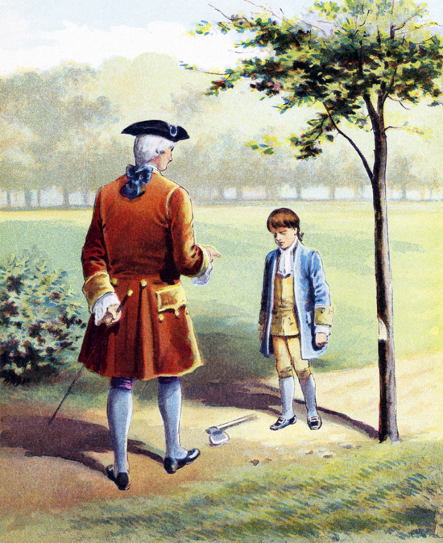
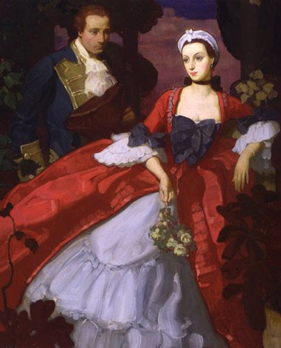
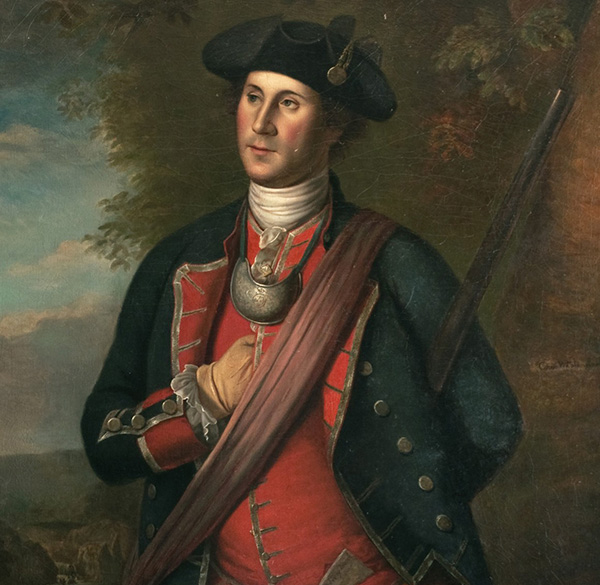
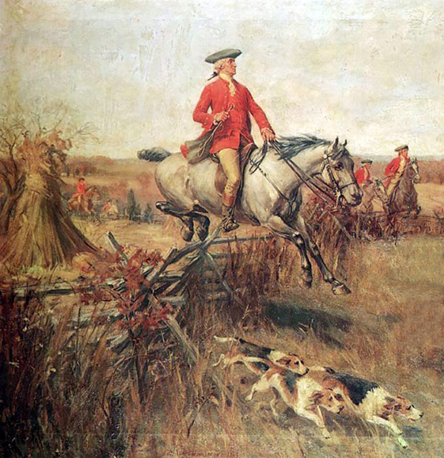

Resume
“There is nothing which can better deserve our patronage than the promotion of science and literature. Knowledge is in every country the surest basis of public happiness.”
“If freedom of speech is taken away, then dumb and silent we may be led, like sheep to the slaughter.”
“Perseverance and spirit have done wonders in all ages.”
-
February 22, 1732
George Washington is born in Popes Creek Plantation, Westmoreland County
-
1735
The Washington family move to Little Hunting Creek
-
1738
The Washington family move to Ferry Farm
-
April 23, 1743
George Washington's father, Augustine, dies
-
1748
George Washington goes on the surveying trip with Lord Fairfax and begins working as a surveyor in the Shenandoah Valley
-
July 1749
Washington becomes the official surveyor of Culpepper County, Virginia
-
1750 - 1752
George Washington works privately as a surveyor.
-
1752
Lawrence Washington, George's half brother, dies
-
1752
Washington is appointed to a position in the Virginia Militia
-
October 3, 1753
Washington is sent to assess the strength of the French in the Ohio Valley
-
November 1753
Washington is given the rank of major in the Virginia Militia
-
1754
Washington receives a commission as a Lieutenant Colonel in the newly formed colony-wide Virginia Regiment
-
May 28, 1754
Lieutenant Colonel Washington successfully attacks the French camp at Fort Dunquesne which was the first encounter of the French and Indian War
-
1754
Lieutenant Colonel Washington builds Fort Necessity but is forced to surrender it to overwhelming French forces
-
1755
Braddock and 2000 British regulars arrive in America
-
April 1755
Washington joins British General Edward Braddock's staff as a volunteer aid-de-camp
-
July 9, 1755
The Battle of Monongahela, General Braddock's and Lieutenant Colonel Washington's troops are ambushed and defeated by the French and Indians
-
October 1755
The governor of Virginia appoints Washington as commander-in-chief of an all Virginia force with the rank of colonel
-
November 1758
Washington successfully drives the French away from Fort Duquesne
-
December 1758
Washington resigns his commission as colonel and quits the Virginia Regiment
-
1758
Washington fails to secure a commission as a British officer and turns back to work as a farmer
-
1759
Washington is elected to the Virginia House of Burgesses and serves for the next 15 years
-
1761
George Washington becomes the owner of Mount Vernon Plantation following the death of Lawrence's widow
-
May 1769
George Washington presents resolutions written by George Mason to the Virginia House of Burgesses that opposed taxation without representation
-
1770s
The American colonies begin to protest the high taxes imposed by England
-
June 19, 1773
George Washington's step daughter, Patsy, dies after suffering an epileptic fit at the age of 17
-
December 16, 1773
The Boston Tea Party
-
September 1774
George Washington is elected as a delegate to the First Continental Congress
-
1775
George Washington owns 6,500 acres on Mount Vernon and the sixteen-sided barn is completed on the plantation
-
April 19, 1775
Shots are fired at Lexington and Concord which begins the Revolutionary War
-
May 10, 1775
The Second Continental Congress convenes in Philadelphia. Washington attends in full military uniform
-
June 15, 1775
Washington is appointed General and Commander-in-Chief of the new Continental Army by the Second Continental Congress
-
July 4, 1776
The Declaration of Independence is signed.
-
July 9, 1776
Washington orders that the Declaration of Independence be read aloud to his troops
-
August 27-30, 1776
The battle of Long Island begins. Washington is forced to retreat and he and his men miraculously escape from the British
-
October 28, 1776
The Battle of White Plains - General Cornwallis forces General Washington to retreat to the west
-
December 25-26, 1776
The American Army crosses the Delaware and launch a surprise attack on the Hessians in Trenton
-
September 11, 1777
General Washington is defeated at the battle of Brandywine
-
Winter 1777-1778
The American Army winters at Valley Forge
-
June 18, 1778
General Clinton's army begins a march from Philadelphia to New York City
-
June 19, 1778
American General Lee moves out to attack General Clinton from the rear with the rest of the American army following
-
June 27-28, 1778
The Battle of Monmouth occurs in New Jersey. The Continental Army catches up with the British and attacks
-
July 8, 1778
General Washington sets up his headquarters at West Point
-
July 10, 1778
The French declares war against Britain and joins the colonists to help them fight for their freedom
-
1781
Lund Washington bargains with the British, keeping Mount Vernon from being destroyed.
-
August 1781
British General Cornwallis traps himself in Yorktown
-
August 19, 1781
The American and French armies begin their march to Yorktown
-
September 28, 1781
The French and Americans begin their attack on the British at Yorktown
-
October, 14, 1781
The French and Americans begin to charge the fortifications at Yorktown
-
October 17, 1781
The British under the command of General Cornwallis surrender at Yorktown
-
November 5, 1781
George Washington's step son, Jack dies of fever while serving in the army. Two of Jack's children move in with George and Martha
-
February 4, 1783
England officially declares an end to hostilities in America
-
September 3, 1783
The Treaty of Paris is signed by the United States and Great Britain officially ending the American War for Independence
-
November 2, 1783
George Washington delivers his farewell address to the army
-
December 23, 1783
Washington resigns his commission as commander-in-chief of the army to the Congress of the Confederation
-
1783
Congress first discusses building a memorial in honor of George Washington
-
May 25, 1787
George Washington is elected President of the Constitutional Convention in Philadelphia
-
June 21, 1788
The ninth state ratifies the Constitution, making it the law of the new country
-
1789
Mary Ball Washington, George's mother dies
-
April 17, 1789
Washington is informed that he was unanimously elected as the first President of the United States
-
April 30, 1789
George Washington takes the oath of office as the first President of the United States in New York City.
-
July 16, 1790
Congress instructs Washington to select the location of the permanent capital. He chooses a location on the banks of the Potomac River
-
February 13, 1793
George Washington is unanimously re-elected for a second term as President of the United States
-
April 22, 1793
Washington issued the Neutrality Proclamation to keep the United States out of the war between France and Great Britain
-
November 19, 1794
The Jay Treaty is signed to maintain trade with Great Britain
-
September 19, 1796
George Washington publishes his Farewell Address which was issued as a public letter
-
March 1797
Washington retires to Mount Vernon
-
1797-1798
The Distillery is built on the Mount Vernon Plantation
-
1798-1800
The Quasi War with France
-
July 4, 1798
Washington is commissioned as Lieutenant General and Commander-in-Chief of the new United States Army
-
July 7, 1799
Washington drafts his will in which he frees his slaves upon Martha’s death
-
December 12, 1799
George Washington gets ill during a ride on his plantation
-
December 14, 1799
George Washington dies, at the age of 67, of a throat infection that was made worse by the medical treatment that he received.
-
1799, 1832
Congress discusses building the Washington memorial
-
1832
The Washington National Memorial Society is formed
-
1836
The Washington National Memorial Society asks for design ideas
-
1848
Construction is begun on the Washington Monument
-
1855
The Washington National Memorial Society runs out of money and construction on the monument is halted completely
-
1876
Congress passes a $200,000 contribution for the work on the monument
-
August 9, 1884
Final marble piece is placed on the top of the monument
-
December 6, 1884
Capstone placed on the top of the monument officially finishing construction
-
1976
George Washington is posthumously promoted to the General of the Armies of the United States, the highest rank possible.
EDUCATION
The first president’s formal schooling ended when he was 11 years old, after his father died. That event cut young George off from the opportunity to be educated abroad in England, a privilege that had been afforded to his older half-brothers. Washington’s mother never remarried, forcing the adolescent to shoulder weighty burdens at a young age, as the oldest child of six from his father’s second family. She taught him how to run a tobacco farm, and at the age of 16 he took his first job as a land surveyor. For the rest of his life, Washington would be embarrassed by his stunted schooling.
LOVE
“The world has no business to know the object of my love, declared in this manner to you when I want to conceal it,” Washington wrote weeks before his wedding. The letter wasn’t sent to his fiancée Martha Custis—but to Sally Fairfax, who was married to one of his best friends and patrons, George Fairfax, son of one of Virginia’s largest landowners. Described as an intelligent, “dark-eyed beauty,” Sally befriended Washington when he was still an awkward teen. Historians credit her with helping to smooth his rough edges socially, teaching him how to behave and converse among the wealthy and powerful, and even how to dance the minuet. It’s unclear whether romance actually blossomed between the two.
SECRET SERVICES
Washington struggled mightily to win the Revolutionary War with an army that was perpetually undermanned, undertrained and undersupplied. So to triumph over one of the world’s most powerful military forces, he relied increasingly on his unseen weapon: a secret intelligence network. Throughout the conflict, Washington’s spies helped him make bold, canny decisions that would turn the tide of the conflict—and in some instances, even save his life.
ANIMALS

Washington wasn’t just America’s first president, he was also its first mule breeder. Recognizing the value of the mule for farmers, Washington is believed responsible for creating the mule stock that powered American agriculture in the South for generations.
And mules weren’t the only animals he bred. In addition to many varieties of birds, Washington kept many canine breeds at Mount Vernon, including Dalmatians, English foxhounds, French hounds, Greyhounds, Italian Greyhounds, mastiffs, Newfoundlands, pointers, spaniels and terriers. A huge dog lover, he selectively bred hunting dogs for speed over the years and gave them endearing names like Sweet Lips, Venus, Trulove, Taster, Tippler, Drunkard and Madame Moose.